Instruction¶
Outline:
- 计算机硬件的操作 Operation
- 计算机硬件的操作数 Operand
- 有符号数和无符号数 Signed and Unsigned Numbers
- 指令的表示 Instruction Representation
- 逻辑操作 Logical Operations
- 决策指令 Making Decisions
- 计算机对过程的支持 Procedure Support
- 指令的寻址 Instruction Addressing
指令->Statement
指令集->Syntax
Operation¶
在RISC-V中，每一条指令只支持一个操作
Operands¶
在算术运算中，操作数只能是寄存器，也就是我们做运算时，一定要先把数据存放到寄存器中，再对两个寄存器进行运算。
RISC-V中的寄存器是 32 x 64-bit 的Register File(实验中实现的是32 x 32-bit)
64bit是double word，32bit是word
32个寄存器：
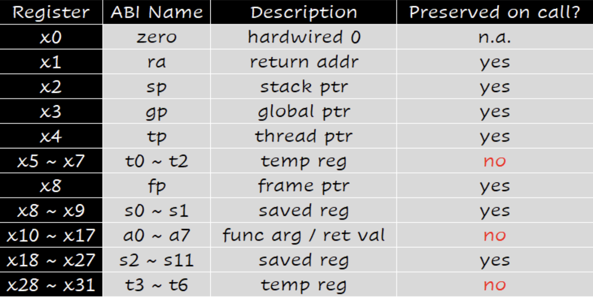
Memory Operand¶
Main Memory用来存储复杂的数据，在进行算术运算时，需要load将数据从Memory中加载到寄存器中，得到的结果也需要store回Memory中。
Memory is byte addressed: 每个地址都是一个8-bit的byte，访问时是按照byte访问的。
- Endian
大小端：就是指数据在内存中存储的顺序。
Big or Little Endian
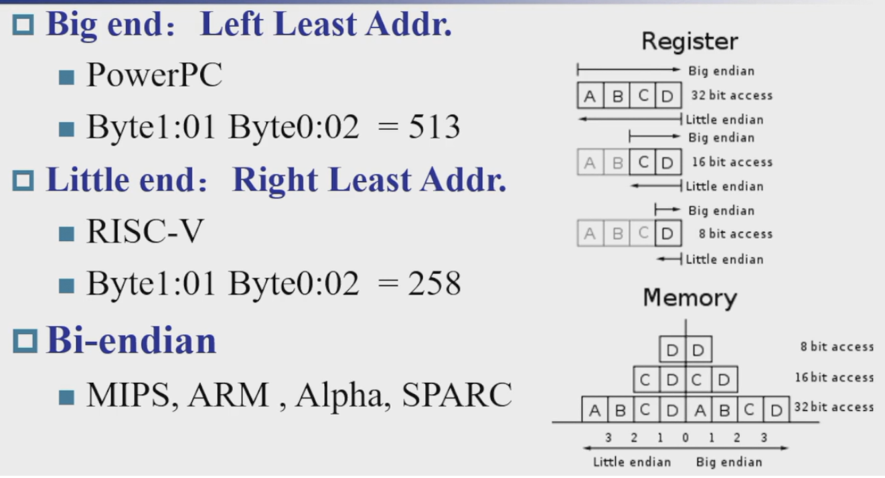
- Word Alignment
RISC-V中，不要求进行地址对齐，但是对齐的情况是更好的
一个word是四个字节，因此对齐的起始地址一定是4的倍数，也就是0，4，8……，这些地址的二进制码都是末端两个bit为0的，而如果按照halfword访问，地址的末端一个bit为0即可。
Memory Alignment
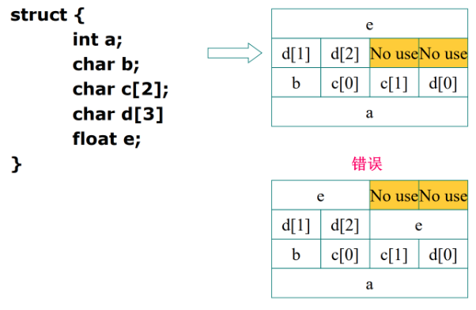
下面是一个例子讲解怎样进行一次运算：讲解的例子都是按照double word（8 bytes 64-bit）进行操作的。
ld指令的64是偏移量（offset），x22是基地址，x9是目标寄存器
因为我们的基址是x22，第八个double word的地址就是8 * 8 = 64，所以偏移量是64
同理在sd指令中，96是偏移量
Immediate Operand¶
如果说一个常数存在于一个地址中，那么在对一个寄存器增加一个常数时，就需要使用ld指令，将常数从Memory中加载到寄存器中，再进行加法运算。
为了减少指令个数（不使用ld指令），RISC-V中引入了立即数（Immediate），立即数是直接编码在指令中的，因此不需要再从Memory中加载。
Representation of Instructions¶
所有的指令在机器中都是用二进制表示的，被称作Machine Code机器码，任何的指令在进行操作时，都是对Machine Code进行操作，这一部分将会讲解如何对指令进行编码使其成为Machine Code。
我们将x0-x31寄存器映射到0-31这些数字，因此寄存器的名字就变成了0-31
RISC-V中，指令的长度是固定的，32-bit
大部分情况下我们用16进制表示指令，因为16进制表示的指令更短，更方便。
有四种基础的指令格式(R/I/S/U),再根据立即数解码的不同分出两种(B/J),共六种
常见指令编码
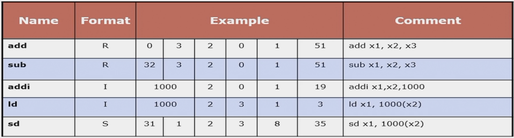
R-Type¶
使用寄存器进行数字逻辑运算的指令
对于移位运算，rs2是shift amount

- opcode: 操作码，有128种操作，作为指令的大类区分
- rd: 目标寄存器
- rs1: 第一个源寄存器
- rs2: 第二个源寄存器
- funct3、7: 功能码，作为opcode的补充
比如说加法和减法，他们的opcode都是0110011，但是他们的funct3不同，加法是000，减法是001
I-Type¶
使用寄存器和立即数进行数字逻辑运算的指令，以及load指令

- rs1: 源寄存器
- rd: 目标寄存器
- imm: 立即数 由rs2和funct7合并的12位立即数 2's Complement, sign extended
- funct3: 功能码
立即数是{{20{inst[31]}}, inst[31:20]}，也就是对imm[11:0]进行符号扩展到32位
移位操作也属于是I-Type的一种，但是移位操作将I-Type的imm分为了两部分，高6位的部分是funct6,低6位的部分是immed
对sll srl指令是移位并补0
对slli srli指令是移位i位,也就是乘或除以2的i次方(unsigned)
在算数逻辑移位(sra)中,符号位保持不变,因此移位后需要补全符号位
S-Type¶
store类指令

- rs1: 放base address
- rs2: 放source operand
- funct3: 对存储的数据类型(byte, halfword, word)进行区分
立即数是{{20{inst[31]}}, inst[31:25], inst[11:7]}
B-Type(SB)¶
由S-Type指令分化而来，区别是立即数的读取方式不同，是所有分支类指令的编码方式
左边高位imm是imm[12, 10:5]，右边低位imm是imm[4:1, 11]
立即数是{{19{inst[31]}}, inst[31], inst[7], inst[30:25], inst[11:8], 1'b0}
U-Type¶
只有lui指令和auipc指令，用于存放高位立即数

立即数是{inst[31:12], 12'b0}
就是填充高20位，低12位为0
J-Type(UJ)¶
仅有jal指令，用于存放跳转地址
由U-Type指令分化而来，区别是立即数的读取方式不同
将U-Type的立即数部分改为了：
{{11{inst[31]}}, inst[31], inst[19:12], inst[20], inst[30:21], 1'b0}
Instructions for Making Decisions¶
Branch¶
如果reg1 == reg2，则跳转到Label处执行
如果reg1 != reg2，则跳转到Label处执行
如果reg1 < reg2，则跳转到Label处执行
如果reg1 >= reg2，则跳转到Label处执行
if-else
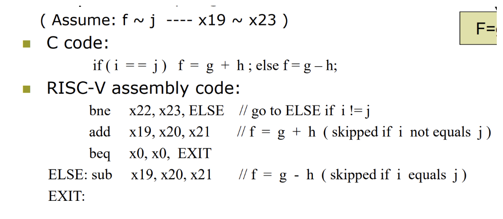
while loop
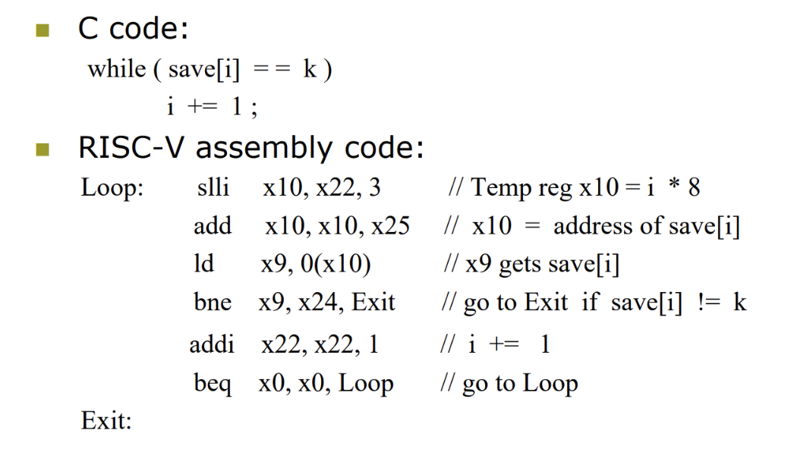
SLT¶
通常用来比较两个数的大小，得到的结果存放在一个临时寄存器中作为标记，如果rs1 < rs2，则将临时寄存器置1，否则置0，这个临时寄存器和0相比是否相等可以作为beq指令的判断条件
Jump¶
当前pc地址的下一个地址(pc+4)存放在rd中(为了能回来)，然后跳转到rs1+imm处
pc = (imm+rs1) & 0xFFFFFFFE 即最低位会被设为 0
switch
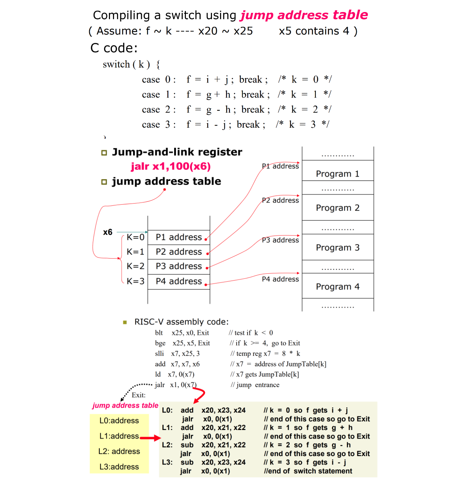
x6内存储的是对应的几个case中的程序的入口地址——跳转表
跳转语句先对跳转边界进行检查，检查无误后把k左移三位放到临时寄存器，然后与跳转地址的基址相加
这里load指令的作用：
先前我们用x7作为一个临时寄存器用于存储跳转表中需要跳转的地址，进行load后，x7仍然是一个临时寄存器，但是这时x7装载的就是这个地址中的信息，也就是jalr需要跳转到的程序的位置（仍然是个地址）
rd = pc+4, pc = pc+imm 即将当前指令下一条指令的地址存入 rd，然后相对跳转到 imm 处
Basic Block¶
基本块：最小的程序代码块，一个块内的指令是顺序执行的，块与块之间通过跳转指令连接，但是不会有指令跳转到基本块的内部
Procedure Support¶
对函数的支持:
- Place parameters
- Transfer control(jump)
- Acquire storage resources
- Perform tasks
- Place results
- Return control
Caller¶
use jal指令 jump and link
- x1: 存放pc+4，也就是调用函数后需要返回的地址，同时跳转到
PC = PC+ProcedureAddress的位置
Callee¶
use jalr指令 jump and link register
- x0: 固定为0
- x1: 跳回到返回的下一个指令的地址
x0 是在 rd的位置上，这个位置本来是存放PC+4的，但是这里我们用x0来接收，因为在函数返回过程中，我们不需要用到这个位置，因此我们用不会被改变的x0来接收
Arguments¶
通过寄存器传递参数
用的是x10-x17这8个寄存器，在这里这几个寄存器被称为a0-a7寄存器
x1寄存器是保留返回地址的寄存器，在这里被称为ra寄存器
Leaf Function¶
是为了在函数调用时，能够保存返回地址和一些临时变量
栈的地址分配是从高地址到低地址的
栈顶的指针是sp寄存器，指向压入栈中的最后一个数据
- Push：
- Pop
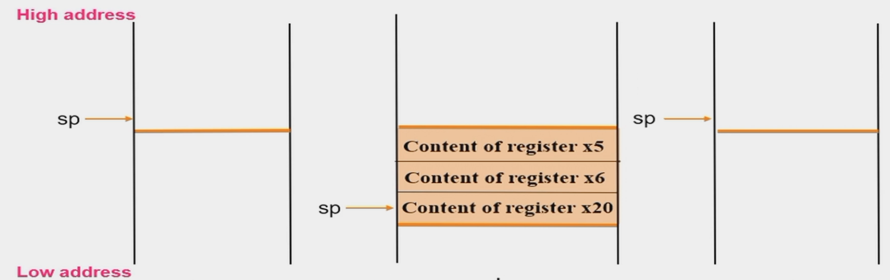
leaf function
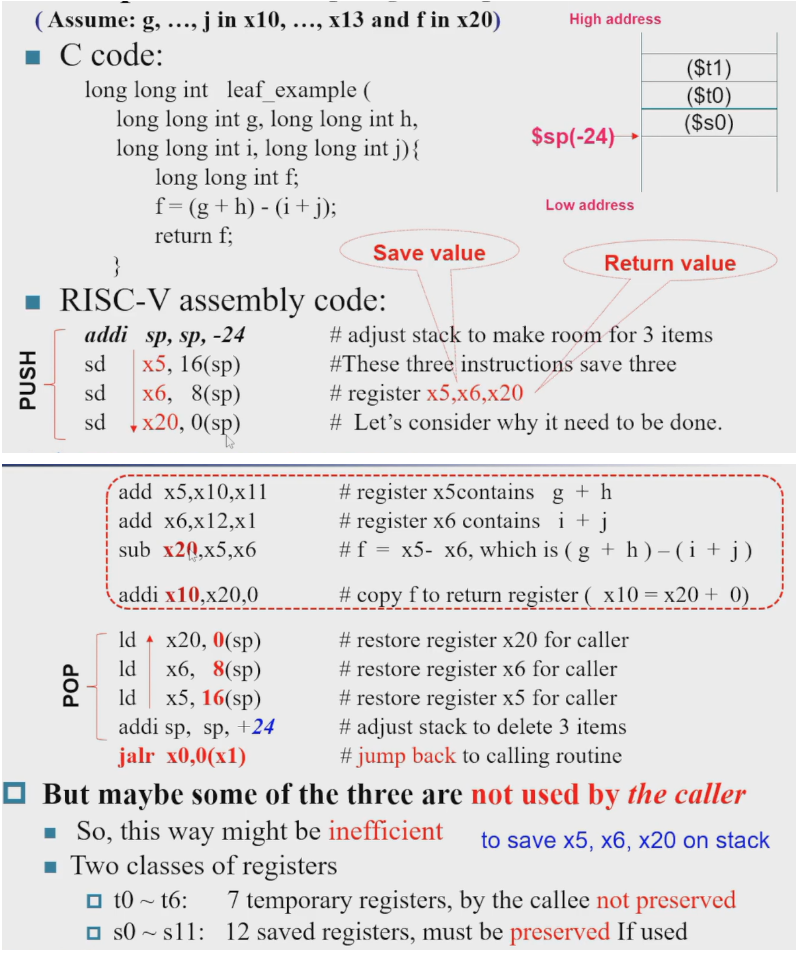
这里我们可以发现在进行运算的时候，我们用到了x5，x6，x20这三个非参数寄存器作为g+h，i+j的临时寄存器，但是在函数调用的时候，我们并没有保存这三个寄存器中的值，因此如果在这个函数中，这三个寄存器中的值发生了改变，那么就会影响到其他函数中的值，因此我们需要在函数调用的时候，将这三个寄存器中的值压入栈中，然后在函数返回的时候，再将这三个寄存器中的值弹出，这样就可以保证这三个寄存器中的值不会影响到其他函数。
这里我们可以看出，栈在这里起到了一个临时变量存储的作用，因此我们称调用者和被调用者之间的这段栈为调用栈。
但是这样做有一个问题就是浪费了大量指令在栈的压入和弹出上，效率不高，我们约定：
对寄存器进行划分：
- t0-t6: 临时寄存器，用于存放临时变量(内部临时用 不保存)
- s0-s11: 保存寄存器，用于存放需要保存的变量(外部用 会保存)
在上面的例子中，我们可以尽量使用t0-t6这些不用入栈的寄存器，如果需要保存的变量太多，那么再使用s0-s11这些需要入栈的寄存器。
下面是寄存器的常用用途：
| 寄存器 | 名称 | 用途描述 | saver |
|---|---|---|---|
| x0 | zero | 硬件0 | |
| x1 | ra | 返回地址 | caller |
| x2 | sp | 栈指针 | callee |
| x3 | gp | 全局指针 | |
| x4 | tp | 线程指针 | |
| x5 | t0 | 临时变量/备用链接寄存器 | caller |
| x6-7 | t1-2 | 临时变量 | caller |
| x8 | s0/fp | 保存寄存器/帧指针 | callee |
| x9 | s1 | 保存寄存器 | callee |
| x10-11 | a0-1 | 函数参数/返回值 | caller |
| x12-17 | a2-7 | 函数参数 | caller |
| x18-27 | s2-11 | 保存寄存器 | callee |
| x28-31 | t3-6 | 临时变量 | caller |
Nested Function¶
leaf func中的栈是单次的，刚开始push，结束pop
n!
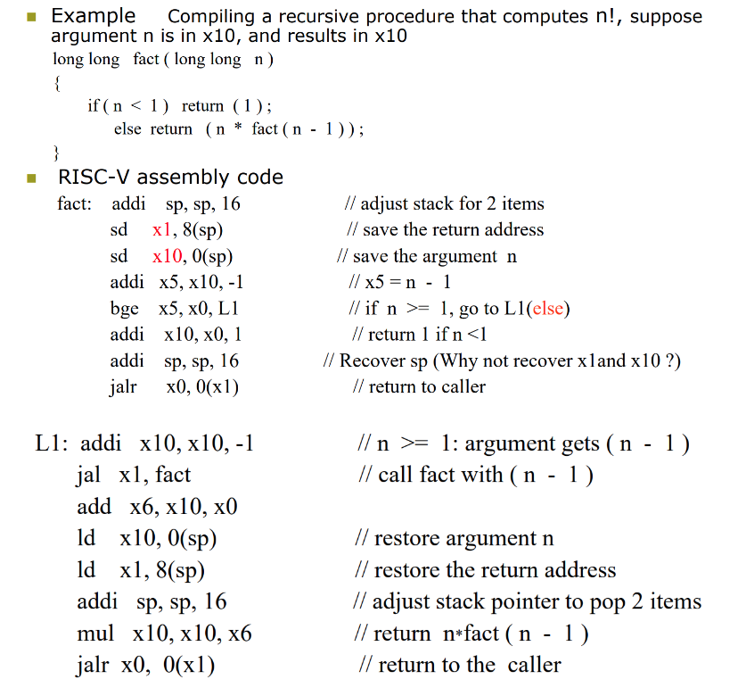
对整体的过程进行分析：
- 递归调用 在进行递归时，由于n一直>0，因此会一直递归下去，直到n==0为止，也就是在fact部分bge前和L1部分jal语句之间来回跳转到n==0
-
恢复并计算 到n==0后，先进行一次对base case的处理，也就是fact(0) = 1，然后进行恢复，恢复的过程是L1部分jal语句的返回，一直在L1部分jal语句和jalr语句之间来回跳转，直到返回到栈顶
-
计算最终结果 最终jalr语句返回后，x10中存储的就是最终的结果
以n=3为例：


FP是帧指针frame pointer，用来指向当前函数的栈帧的栈底，只有当跳转函数时，才会改变FP的值
Memory Layout¶
- Text: program code 就是放指令
- Static data: global variables
- Dynamic data: heap 动态数据-malloc用的
- Stack: automatic variables 自动变量

Comunicate¶
不同编码有不同的数据长度，因此也需要不同的load和store指令
- lb: load byte
- lh: load halfword
- lw: load word
-
ld: load doubleword
-
lbu: load byte unsigned
- lhu: load halfword unsigned
因为寄存器是64位的，因此读取出来的数据需要进行符号扩展（lb）或零扩展（lbu）
比如在读取A[i]时，如果A是int型，那么就需要读取4个字节，如果A是short型，那么就需要读取2个字节
- sb: store byte
- sh: store halfword
- sw: store word
- sd: store doubleword
store指令就不需要进行符号扩展或零扩展了，我们只是把对应部分放到对应位置上
上述四个指令就是存在寄存器的rightmost 8/16/32/64 bits
string copy
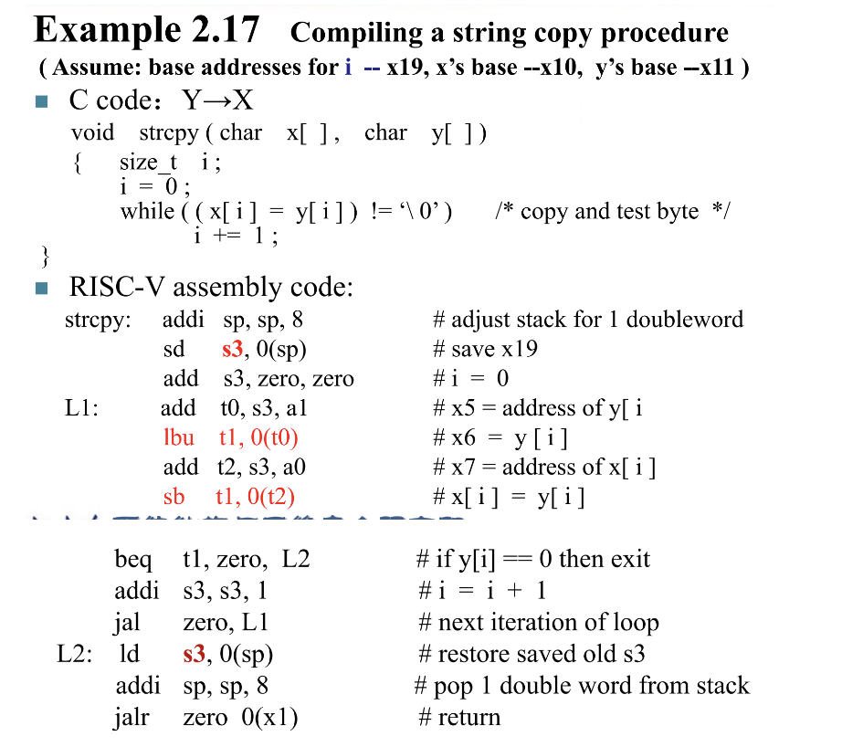
但是i应该存在临时寄存器而不是s3，这样就不需要栈来存了
Addressing¶
Wide Immediate¶
对于jal指令，如果立即数是32位的就超过了他的跳转范围，那么就需要使用lui这个指令先将所需要跳转的指令的地址的高20位放到寄存器中，然后用jalr指令将这个寄存器和偏移量相加，就可以得到最终的跳转地址
32-bit immediate
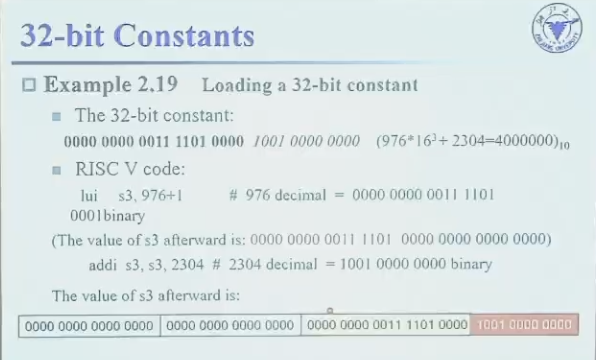
这里是加上977而不是976，因为在lui时扩展了符号位，其实我也不是很懂为什么加上1，但是既然说了就记住吧（最近事情太多 妈的 摆了。。。）
po一张书上对于这个问题的解释吧 我觉得大体意思就是看第11位是0还是1，如果是0，那么就加976，如果是1，那么就加977
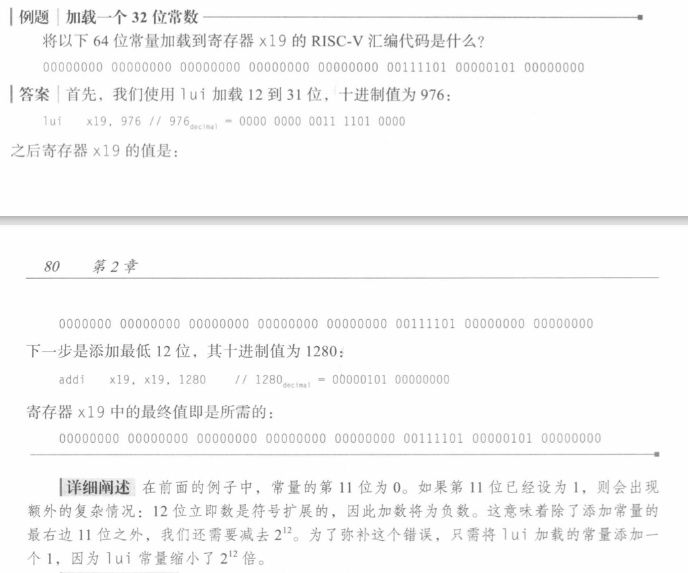
Branch Addressing¶
是相对地址跳转
- PC-relative addressing：
在B-Type指令中，立即数是{{19{inst[31]}}, inst[31], inst[19:12], inst[20], inst[30:25], inst[11:8], 1'b0}，可以看到最低位是0，因此Branch_offset一定是偶数
Instruction to Code
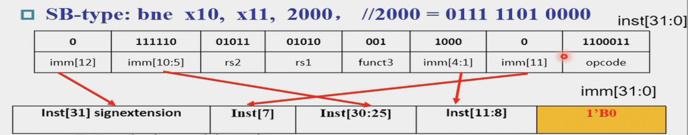
在这个例子中我们需要进行2000的跳转，我们可以看到在进行编码时，instruction中的立即数被编码到了寄存器的高11位，第0位是0，因此在instruction中，我们只需要编码1000的立即数，就可以完成2000的跳转
Encode while loop
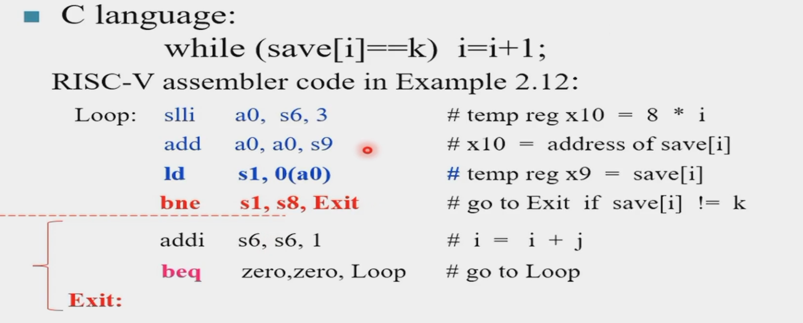
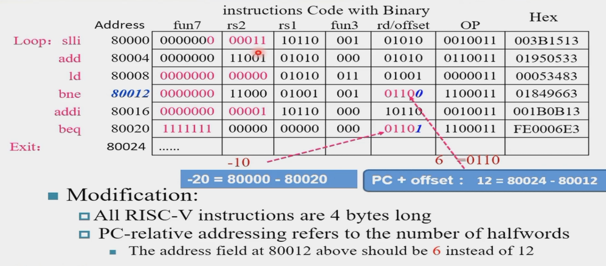
- bne: 进行跳转是由自身到Exit的地址，offset = 80024-80012 = 12，但是编码时，我们只需要在rd也就是offset中编码0110 = 6
beq也是同理，但是需要注意的是，beq的offset是负的，
RISC-V Addressing Summary
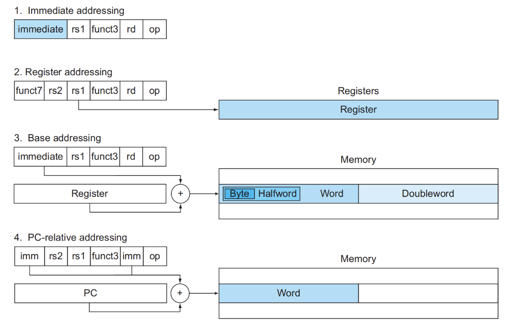
Disassembly¶
反汇编：将Machine Code转换为Assembly Code
Table
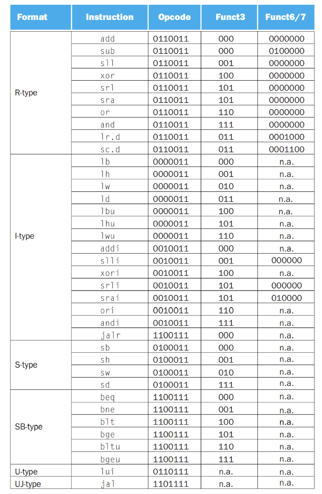
Synchronization and Prgram Translation¶
这里made说是了解一下的，补雪啦
放一下noughtq的笔记链接🔗吧 写的超级好
C in RISC-V¶
Sort¶
评论区